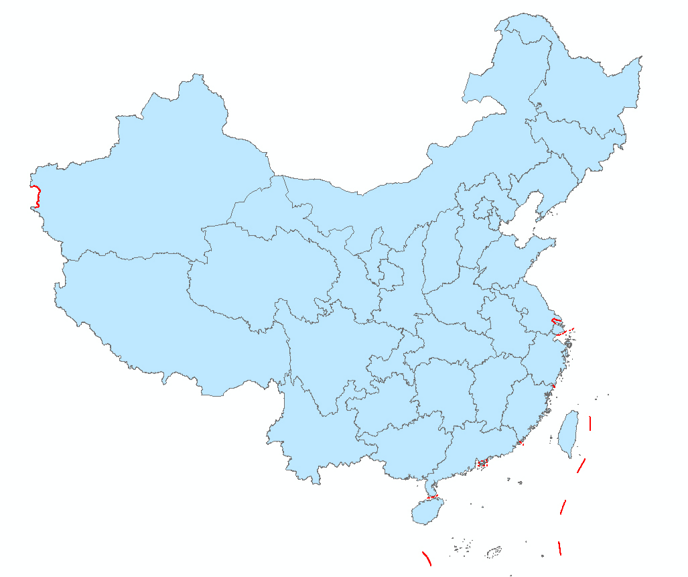

代表性项目名录
铸牢中华民族共同体意识 · 各民族像石榴籽一样紧紧抱在一起
五大主题分类 · 点击卡片进入详情
↑↓ 在本页内上下滑动浏览全部资讯，滑到底部再切换下一屏
头条
惠民社区入选全国民族团结进步示范区示范单位
火车站街惠民社区创新"六治联动"治理模式，5支"红石榴"志愿服务队穿梭在楼栋院落，实现武威市城市社区该类国家级荣誉"零"的突破。
- 10本月资讯
- 12+涵盖地区
- 46活动场次
- 3.2万覆盖人次
民族团结地图
悬停省份查看累计数据 · 右侧默认显示全国第十二批命名统计
本页内向下滑动可查看全部数据

悬停省份名称切换右侧数据 · 地图样式参考中国非物质文化遗产网